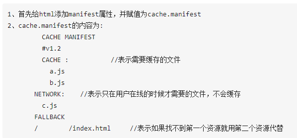

html5的新特性
-
1,标签的语义化。
比如说header,footer,nav,action,article,aside(内容可用作文章的侧栏)等；
新增了输入email,url的输入框元素；
-
2,新增视屏音频元素(video，audio);
使得不需要再依赖外部的插件来引入视屏音频；
-
3,新增了一些api;
比如说获取用户的地理位置 window.navigator.geolocation;
-
4,WebSocket协议
传统的http协议，只能是客户端向服务器发出请求，服务器返回查询结果，做不到服务器主动向客户端推送信息。
而websocket协议，可以让我们建立客户端到服务器端的双向通信，这就意味着服务器端可以主动推送数据到客户端，
websocket协议深度学习具体参考链接：点击此处
-
5,webstorage本地存储，存储在客户端
其包含localeStorage和sessionStorage;
localeStorage是永久性存储在客户端，只要不删除，就一直存在；
sessionStorage是暂时存储在客户端，一旦关闭页面，存储的信息就会消失；
-
6,离线缓存，html5允许我们控制哪些文件需要缓存，哪些不需要；

具体的操作步骤参考链接点击跳转
-
7,web worker是运行在浏览器后台的js程序，它不影响主程序的运行，是另一个js线程；
由于js是单线程的运行的，我们可以用这个线程执行复杂的数据操作，然后把操作结果通过postMessage传递给主线程，这样在进行复杂且耗时的操作时就不会阻塞主线程了。
具体的操作步骤参考链接点击跳转